Contents
Tutorial I. 2/3: Transformation of RVs
In the first part of this SCRIPT an example is given to plot the CDF of a transformed Random Variable 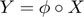, whereas we know the CDF of X. In the second part, the inverse is done. We want to get the mapping 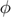 between to RVs , , where we have the CDF for both RVs.
clear variables
clf
I. Get the CDF of the transformed RV
Suppose 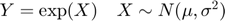. Then the CDF of Y is defined by: 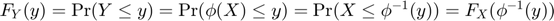. For the example, one can calculate 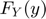 analytically: 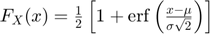. Whith 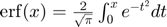. Which leads to the CDF 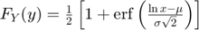. The distribution of corresponds to the lognormal distribution.
% Define the transformation phi=@(x)exp(x); % And its inverse inv_phi=@(y)log(y); % Define distribution $N(-1,1)$ mu=-1; sigma=1; X_dist = gendist_create('normal', {mu, sigma^2}); % The CDF of X F_X=@(x)gendist_cdf(x, X_dist); % And the CDF of $Y$ from the CDF of $X$ and the inverse of the transformation % $\phi F_Y=@(y)(F_X(inv_phi(y))); % Define the x values for the CDF plot eps=0.001; X_lims=gendist_invcdf([0+eps,1-eps], X_dist); x=linspace(X_lims(1), X_lims(2),100); % Plot the CDF of X subplot(2,1,1) plot(x,F_X(x)) hold on % Define the $y$ values for the plot Y_lims=phi(X_lims); y=linspace(Y_lims(1), Y_lims(2), 100); % Plot the CDF of $Y$ plot(y, F_Y(y)) legend('F_X', 'F_Y') xlim([min(x), max(y)])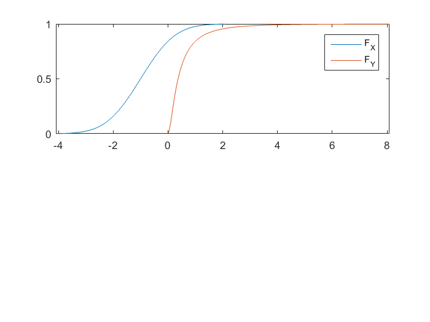
Get the transformation between the two RVs and from their CDFs
Now we do the opposit. Suppose we have 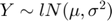 and we need the transforming map , which is given by: 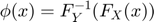
% Define distribution of $Y$ lognor_dist=gendist_create('lognormal', {mu, sigma^2}); % Inverse CDF of $Y$ F_Y_inv=@(p)gendist_invcdf(p, lognor_dist); % The map between $N(\mu, \sigma^2)$ and $lN(\mu, \sigma^2)$ is: phi=@(x)F_Y_inv(F_X(x)); % Sample with the help of the map x_sample=gendist_sample(1000,X_dist); y_sample=phi(x_sample); % Get the experimental PDF from the samples: subplot(2,1,2) histogram(x_sample) hold on histogram(y_sample) legend('f_X', 'f_Y') xlim([min(x), max(y)])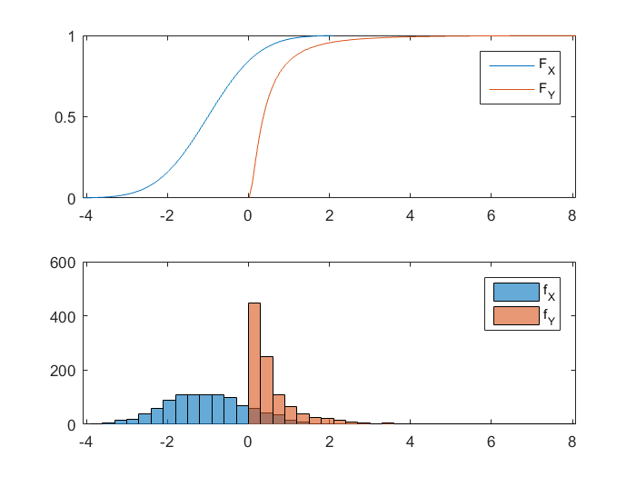